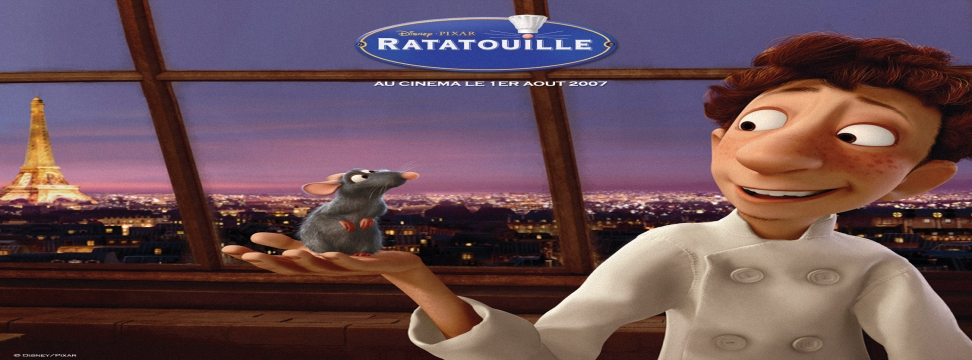

料理鼠王(Ratatouille)
2007年6月29日

【片長時間】 約１１０分鐘
【作品類別】 迪士尼/皮克斯動畫，長篇劇情動畫片
【原著取材】 原創故事
【內容介紹】在２００６年初迪士尼與皮克斯合而為一之後，皮克斯動畫下部作品【料理鼠王】也自然確定由迪士尼發行，本片的計畫其實之前就已傳出，原本是要由皮克斯自行出資，如今迪士尼買下皮克斯，本片就成為迪士尼２００７年的強檔動畫電影了。
本片故事是關於一隻希望成為大廚的小老鼠 Remy ，原本和家人住在法國鄉村，後來意外移居巴黎的下水道，而且讓他高興的是新家在一家頂級餐廳的下方，這家頂級餐廳的主廚 Auguste Gusteau 正是小老鼠的偶像，不過在這位食神過世以後，餐廳也面臨嚴峻的考驗，Remy 意外認識了菜鳥小廚師 Linguini ，成為他的影子廚師，終於有機會發揮他的廚藝天份，Remy 感覺離他夢想愈來愈接近了，當他一心想往美食烹調大師之路邁進的同時，一場刺激驚險的冒險也正在等待著他…